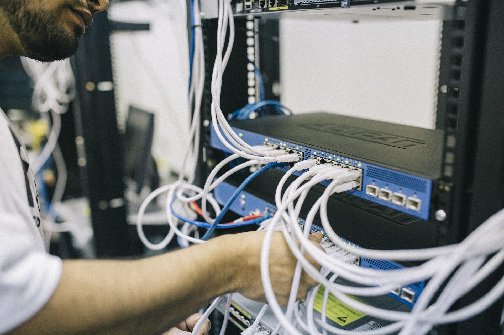

ARM, Apache e FTP

O que esse servidor faz?
Diferente dos demais Racks presentes no nosso datacenter, o Rack 1 possui uma particularidade, ele é aberto, com isso é possível ver toda a sua estrutura, além de trazer um aspecto visual diferente para o datacenter. Ele é responsável pelos serviços de armazenamento e hospedagem de dados, este rack reúne e organiza os equipamentos essenciais para que a rede funcione de forma estruturada. Dentro dele estão concentrados o servidor Apache, responsável por disponibilizar páginas webs para os usuários, e o servidor FTP, que permite a transferência e o gerenciamento de arquivos dentro da própria rede. Dessa forma, ele atua como um ponto central onde os dados são guardados, acessados e compartilhados de maneira segura e eficiente. Com esse rack podemos ver que existem diversos tipos e formatos de racks diferentes em nossa escola.

Clique nas imagens e veja mais sobre
Distribuição
Ele é basicamente uma "caixa" ou painel onde os cabos de fibra que vêm da rua ou de outros andares (chamados de backbone) chegam e são conectados aos equipamentos ativos da rede (como switches, roteadores ou conversores de mídia).
Switch
Ele é um equipamento de hardware que conecta vários dispositivos (computadores, impressoras, servidores, câmeras IP) numa mesma rede (LAN), permitindo que eles conversem entre si de forma eficiente.
Monitor
O Monitor KVM é um dispositivo que integra teclado, vídeo e mouse em uma única estrutura. Ele permite controlar vários servidores a partir de um único console, economizando espaço e facilitando a gestão.
Servidor
Um servidor é um computador, mas diferente do seu computador pessoal (onde você joga, digita textos ou navega na internet), o trabalho do servidor não é atender a uma pessoa sentada na frente dele. O trabalho dele é atender (servir) outros computadores.
Patch Panel
O Patch Panel é um painel passivo (não usa energia) cheio de portas de rede (RJ45), que serve como um ponto intermediário entre os cabos que vêm das paredes e o Switch.